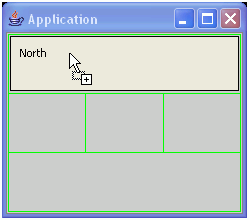
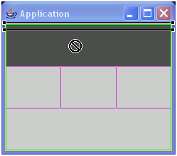
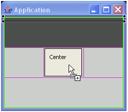

The visual editor provides visual cues for helping you work with
the Swing BorderLayout.
The BorderLayout manager lays out components into regions defined
by compass directions. The class java.awt.BorderLayout implements LayoutManager2,
and its constraint is a string that can be of the value "North", "South",
"Center", "East", or "West".
Note: If you switch a container to BorderLayout
and it has more than five components, only the first five components are added
with constraints to the BorderLayout. The remaining components will be moved
from the container to the free form area of the Design view.
BorderLayout
positions each component at one of the compass constraints along the edge
with its preferred width or height, and the "Center" component occupies all
of the remaining space.
- To add a component on a container that is using BorderLayout:
- Select the Swing component from the palette that you want to
add to the BorderLayout.
- Move your mouse cursor over the Design view.
- The BorderLayout will show five rectangular areas representing the five
constraints of "North", "South", "Center", "East", or "West".
- If the region is empty, the region will be highlighted and the cursor
will show a plus sign, indicating that you can drop the component.

- If the region is already occupied by a component, the cursor will show
a circle with a line through it, meaning that you cannot drop the component
in that region.


- Click the Design view in a valid region to add the component
to the BorderLayout.
- To move components within a BorderLayout:
- In the Design view, select the component in the BorderLayout
that you want to move to another region within the BorderLayout.
- Drag the component to another region and release your mouse
button. The component will be moved to the new region. If
the region was already occupied by another component, the components will
switch places.
- To adjust the spacing for components within a BorderLayout, you
can set the following properties on the BorderLayout:
- Horizontal gap - sets the distance in pixels between
the center component and the east and west components.
- Vertical gap - sets the distance in pixels between
the center component and the north and south components.
The constraints value is used as the second argument to the method
add(Component,Object) that adds the components
to their parent container. For example, the code to initialize a JPanel might
look like this:
private void initialize() {
this.setLayout(new java.awt.BorderLayout());
this.add(getJLabel(), java.awt.BorderLayout.NORTH);
this.add(getJScrollBar(), java.awt.BorderLayout.WEST);
this.add(getJButton(), java.awt.BorderLayout.EAST);
this.setSize(193, 124);
}
Note: Two additional constants are used to support relative positioning
based on the container's ComponentOrientation: "before line begins" and "after
line ends". For example, in a container where ComponenetOrientation is ComponentOrientation.LEFT_TO_RIGHT,
"Before line begins" maps to "West", and "After line ends" maps to "East".
Mixing the two types of constants is not recommended. Unusual results may
show in the graph viewer and at run time, since the relative constants will
take precedence.